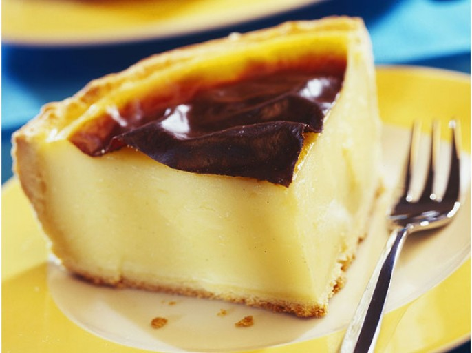

Home
List
Manage
Home
List
Manage
Admin
WOW !!!
Liste des recettes
Recherche une petite recette des familles !
Flan pâtissier
Dessert

Temps = 1h / Personnes = 8 / Très facile / Bon marché
Ingrédients
1 pâte brisée
1 l de lait
150 g de sucre poudre
90 g de maïzena
1 gousse de vanille
Ustensiles
1 tamis
1 cuillère en bois
1 four
1 moule à tarte
1 fourchette
1 spatule
Préparation
Préparation = 20min / Cuisson = 40min
Etape 1
Faire bouillir le lait avec la gousse de vanille fendue (dans le sens de la longueur).
Etape 2
Pendant ce temps, mélanger la Maïzena (tamisée, c'est mieux) avec le sucre.
Etape 3
et ajouter les oeufs bien battus.
Etape 4
Mélanger le tout (bien homogène)
Etape 5
et ajouter le lait bouillant (sans la gousse).
Etape 6
Cuire la préparation à feu doux sans cesser de remuer pendant environ 1 à 2 min
Etape 7
Préchauffer le four à 200°C (thermostat 6-7). Foncer un plat rectangulaire ou rond préalablement beurré avec la pâte brisée.
Etape 8
Piquer le fond.
Etape 9
Y verser la préparation.
Etape 10
Lisser la surface.
Etape 11
Cuire pendant environ 30 à 40 min.
Etape 12
Laisser refroidir.
Etape 13
Déguster.